The Scheme¶
With pyLBM, elementary schemes can be gathered and coupled through the equilibrium in order to simplify the implementation of the vectorial schemes. Of course, the user can implement a single elementary scheme and then recover the classical framework of the d’Humières schemes.
For pyLBM, the scheme is performed
through a dictionary. The generalized d’Humières framework for vectorial schemes
is used. In the first section, we describe how build an elementary scheme. Then
the vectorial schemes are introduced as coupled elementary schemes.
The elementary schemes¶
Let us first consider a regular lattice 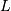 in dimension  with a typical mesh size 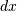, and the time step 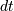.
The scheme velocity 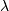 is then defined by
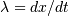.
We introduce a set of 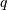 velocities adapted to this lattice
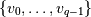, that is
to say that, if 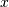 is a point of the lattice , the point
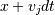 is on the lattice for every 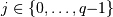.
with a typical mesh size 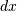, and the time step 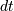.
The scheme velocity 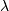 is then defined by
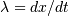.
We introduce a set of 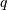 velocities adapted to this lattice
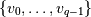, that is
to say that, if 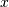 is a point of the lattice , the point
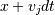 is on the lattice for every 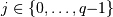.
The aim of the 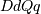 scheme is to compute a distribution function vector 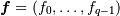 on the lattice at discret values of time. The scheme splits into two phases: the relaxation and the transport. That is, the passage from the time 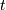 to the time 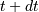 consists in the succession of these two phases.
the relaxation phase
This phase, also called collision, is local in space: on every site of the lattice, the values of the vector 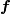 are modified, the result after the collision being denoted by 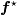. The operator of collision is a linear operator of relaxation toward an equilibrium value denoted 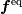.
pyLBM uses the framework of d’Humières: the linear operator of the collision is diagonal in a special basis called moments denoted by 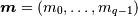. The change-of-basis matrix 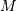 is such that 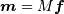 and 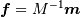. In the basis of the moments, the collision operator then just reads
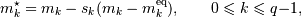
where 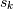 is the relaxation parameter associated to the kth moment. The kth moment is said conserved during the collision if the associated relaxation parameter 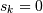.
By analogy with the kinetic theory, the change-of-basis matrix is defined by a set of polynomials with
variables 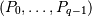 by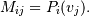
the transport phase
This phase just consists in a shift of the indices and reads
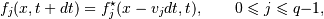
Examples in 1D¶
The transport equation¶
A velocity 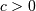 being given, the system reads
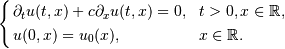
Taken for instance 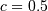, the following scheme can be used:
1 2 3 4 5 6 7 8 9 10 11 12 13 | d = {
'dim':1,
'scheme_velocity':1.,
'schemes':[{
'velocities': range(1,3),
'polynomials': Matrix([1, X]),
'equilibrium': Matrix([u[0][0], .5*u[0][0]]),
'relaxation_parameters': [0., 1.9],
},
],
}
s = pyLBM.Scheme(d)
print(s)
|
The dictionary d is used to set the dimension to 1,
the scheme velocity to 1. The used scheme has two velocities:
the first one  and the second one 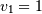.
The polynomials that define the moments are
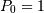 and 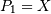 so that
the matrix of the moments is
and the second one 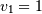.
The polynomials that define the moments are
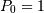 and 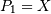 so that
the matrix of the moments is
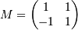
with the convention 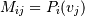.
Then, there are two distribution functions 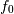 and
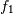 that move at the velocities 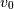 and 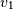,
and two moments 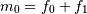 and 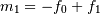.
The first moment 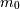 is conserved during the relaxation phase
(as the associated relaxation parameter is set to 0),
while the second moment 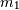 relaxes to its equilibrium value
 with a relaxation parameter 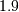 by the relation
with a relaxation parameter 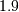 by the relation
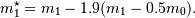
The Burger’s equation¶
The system reads
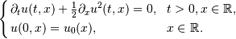
The following scheme can be used:
1 2 3 4 5 6 7 8 9 10 11 12 13 | d = {
'dim':1,
'scheme_velocity':1.,
'schemes':[{
'velocities': range(1,3),
'polynomials': Matrix([1, X]),
'equilibrium': Matrix([u[0][0], .5*u[0][0]**2]),
'relaxation_parameters': [0., 1.9],
},
],
}
s = pyLBM.Scheme(d)
print(s)
|
The same dictionary has been used for this application with only one modification: the equilibrium value of the second moment 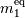 is taken to 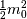.